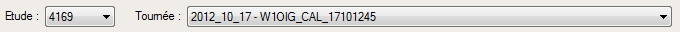
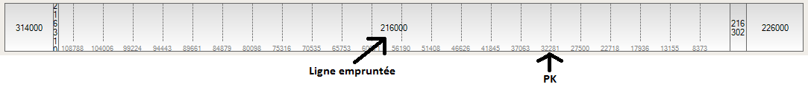
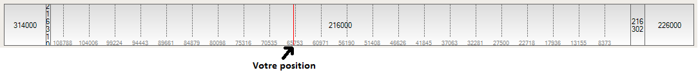
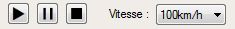

Visualisation de tournées
Pour ouvrir la fenêtre de gestion de tournées, cliquez sur l'item dans la barre d'outils, ou dans le menu (Affichage->Visualiser une tournée...)
Ouvrir une tournée
Pour ouvrir une tournée, séléctionnez l'étude, puis la tournée désirée. Cliquez sur le bouton 'Valider'

Une fois la tournée ouverte, l'application se place automatiquement au début de la tournée.
Le schéma présent sous la sélection de la tournée représente le parcours effectué durant la tournée.
Le texte affiché au millieu (verticalement) du schéma représente les différentes lignes empruntées.
Le texte affiché en bas du schéma représente les PK.

Déplacement dans la tournée
Pour naviguer dans la tournée, vous pouvez utiliser le schema représentant le parcours.
En cliquant sur celui-ci, vous vous déplacerez à la ligne/PK correspondant.
Votre position est indiquée par un trait rouge :

Navigation dans la tournée
Le mode lecture de tournée vous permet de suivre le parcours effectué lors de la tournée.
Pour celà, utilisez le lecteur de tournée :
- Séléctionnez une vitesse
- Utilisez les boutons Play, Pause et Stop, pour naviguer dans la tournée

Vous pouvez utilisez le visualisateur de circuit de voie pendant la lecture, afin de suivre les CdV empruntés